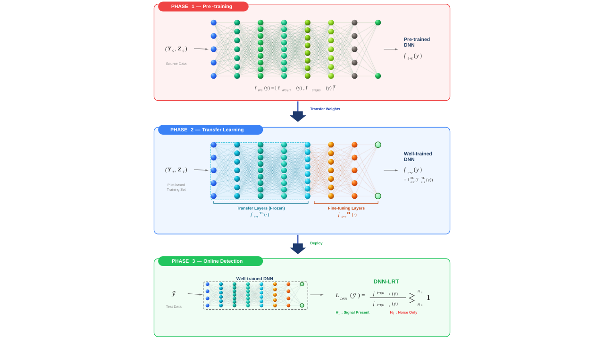
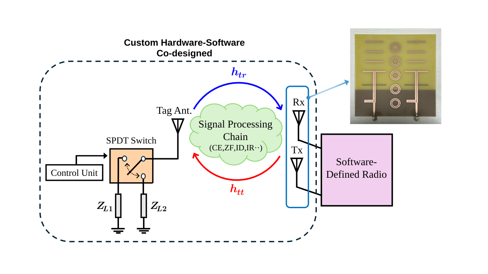
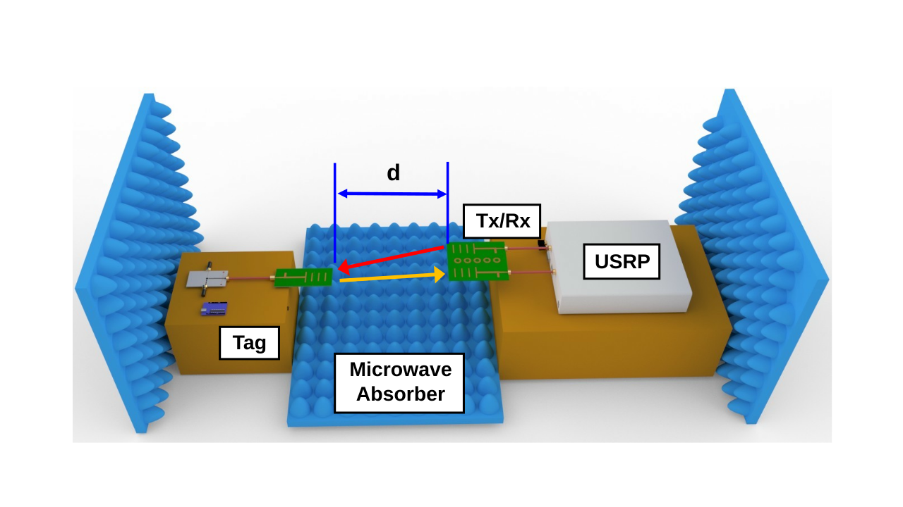
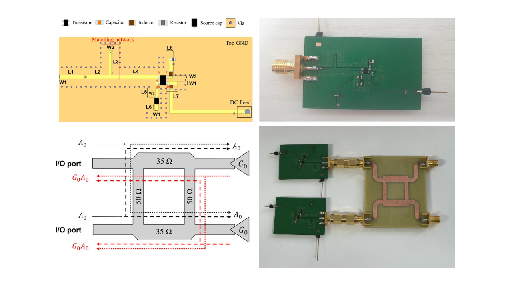
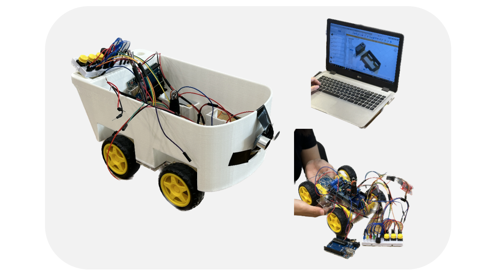
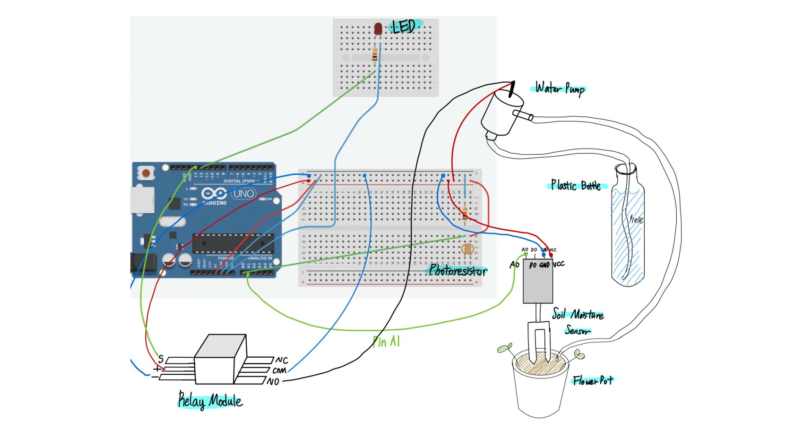

About
Hi ! My name is Hanyeol Ryu (You can just call me Hanyeol :D) and I am a research assistant in the Department of Electronics Engineering at Pusan National University (B.S. '26), advised by Prof. Sangkil Kim.
Outside the lab, you'll find me swimming 🏊, running 🏃, making coffee ☕, or exploring electronics 💻 just for the fun of understanding how they work.
I'm curious about the enduring philosophical questions — what is justice, and how ought we to live 👨🦳 — as well as the mysteries of the universe 🪐, like what happens to information inside a black hole ⚫. I always welcome a conversation about any of these over coffee.
Research
My research focuses on ultra-low-power wireless communications (e.g., backscatter communications), sensing, and artificial intelligence to enable next-generation intelligent sensing and communication platforms for IoT applications.
I am broadly interested in the following areas:
Projects

Neural Network-Based Channel Estimation for Wireless Systems
The proposed phase-aware channel estimators achieve near-CRLB performance under quasi-static conditions, but their first-order linearization constrains the residual phase drift to a narrow admissible range — beyond which irreducible error floors emerge regardless of SNR. This project explores DNN-based transfer learning approaches to overcome this structural limitation, enabling robust signal detection and demodulation beyond the admissible operating regime of the model-based estimators.

Phase-Aware Channel Estimation for Monostatic Backscatter Links
Proposed the lifted LS/LMMSE estimators that model residual phase drift — arising from carrier frequency offset due to independent PLLs at the Tx and Rx, and hardware mismatch — as a nuisance parameter to achieve accurate composite channel estimation in monostatic backscatter links, with closed-form solutions derived from a linearized two-parameter pilot observation model.

Ultra-Low-Power Monostatic Practical Backscatter Systems for Multimedia Communication
Implemented an end-to-end monostatic backscatter system with a SDR reader and custom-designed semi-passive backscatter tag, 2×1 High-gain & High-isolation Yagi-Uda antenna array, and signal processing chain for over-the-air multimedia (full-color image) transmission.

Backscatter Range Extension via Reflection Amplifiers
Designed an active backscatter tag using a reflection amplifier with a 90° hybrid coupler and BJT gain stage, enabling range extension beyond conventional passive tag limits.
Past Projects

Smart Auto Shopping Cart (Barrier-Free)
Built a barrier-free autonomous shopping cart for wheelchair users, integrating Arduino, RFID-based payment, AI voice recognition for navigation control, ultrasonic sensor for collision avoidance, and 3D-printed braille labels.

Smart Farm, Hollow Clock, and Memory Game (Overseas Volunteering)
Taught 3D printing and Arduino programming courses to local students as part of overseas volunteering program in Thailand, guiding projects including a smart farm, hollow clock, and memory game to introduce practical electronics and rapid prototyping skills.
Publications
(†: First author, *: Corresponding author)
Awards
News
Contact
I am open to discussing research collaborations or potential opportunities. Feel free to reach out.